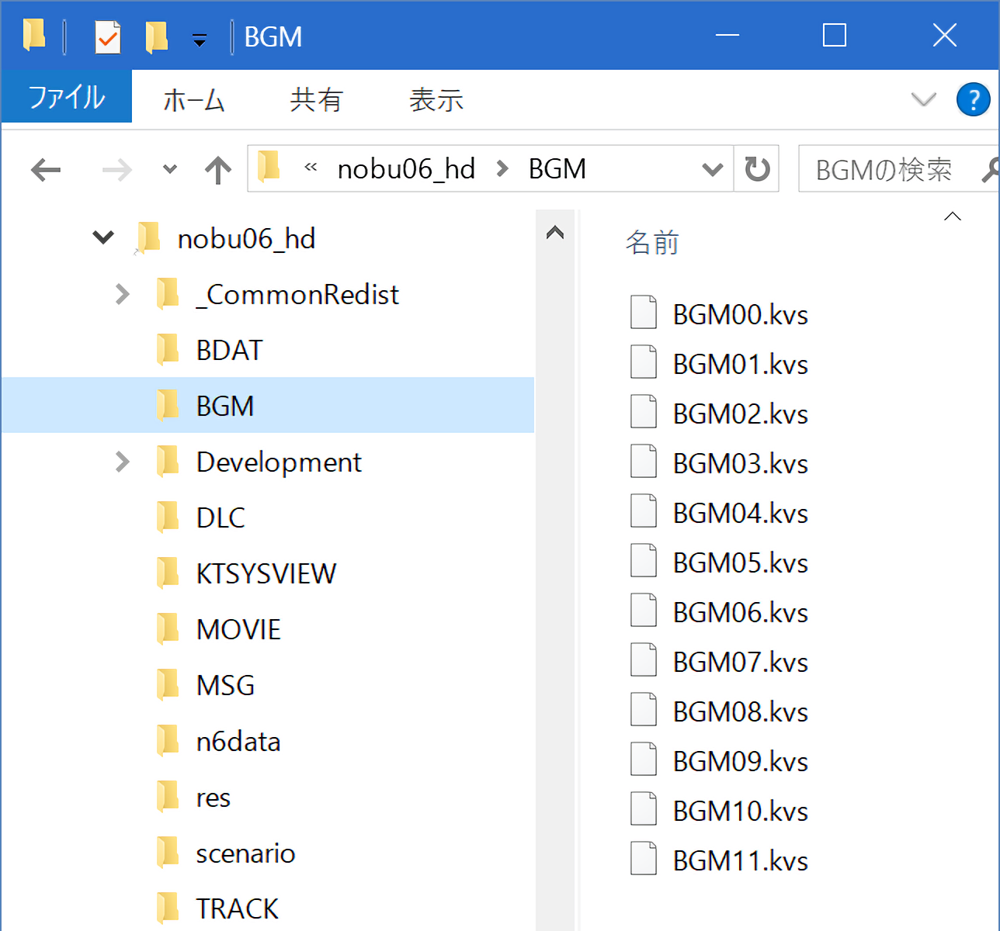
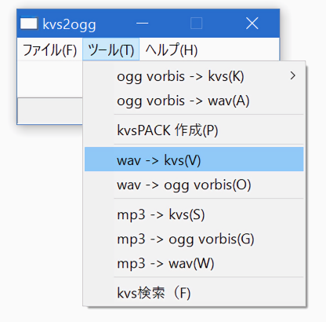

天翔記HD版のBGMの位置は、天翔記ディレクトリのサブフォルダ「BGM」の中にあります。

このフォルダの中のファイル群は、「Ogg」形式の音楽形式を
少し変形させた「Kvs」というコーエー独自の形式です。
利用方法は簡単です。
下図のようにして「wav→kvs」へと変換してください。

元のファイルのＢＧＭを差し替えたとしても、
Steamの「ゲームキャッシュの整合性を確認」をすると、
オリジナルのファイルへと修復され戻ってしまいます。
このため、オリジナルのファイルを差し替えするのではなく、
ファイルを別途用意して、HD.version.SDKによって、読み込み先のファイルを変更するのがお勧めです。
こうすればStreamの更新による影響を気にすることなく、ファイルの編集と利用が可能となります。